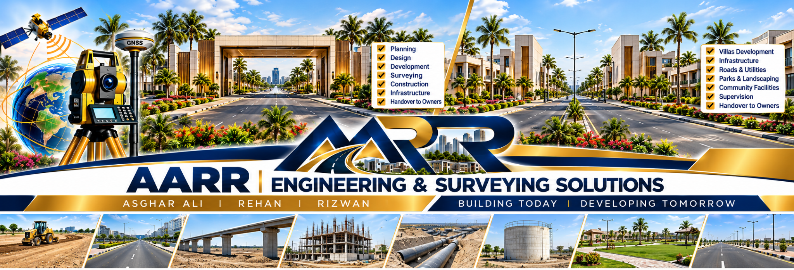

Land Surveying & Mapping
Land measurement, boundary support, levels, existing conditions, city mapping, development surveys and as-built information.
LAND SURVEYING • DESIGN • DEVELOPMENT • INFRASTRUCTURE
AARR connects accurate land information with practical engineering, coordinated development, construction support, completion documentation and final handover.
A complete client-facing service structure covering land, design, residential development, infrastructure, construction support and organized project completion.
Land measurement, boundary support, levels, existing conditions, city mapping, development surveys and as-built information.
Land development, residential, structural, road, infrastructure, water, sewerage, drainage and hydraulic solutions.
Planning, design, structural design, construction support, finishing coordination and complete owner handover.
Planning, infrastructure, development, construction, supervision, testing, completion and handover.
City mapping, roads, bridges, sewerage, drainage, water supply, hydraulic works and existing infrastructure.
Construction support, supervision, testing, as-built documentation, completion and final handover support.
AARR provides a coordinated residential pathway from site information and planning through design, structure, construction support, finishing and owner handover.
AARR connects the major stages of development into one coordinated project pathway.
Supporting accurate information, planning and engineering solutions for existing cities, new developments and infrastructure projects.
Mapping, spatial information, levels, elevation control and existing-development surveys.
Route surveys, road planning, development support and infrastructure documentation.
Network planning, routing, levels, existing-condition verification and completion records.
Water supply, hydraulic studies, route development and infrastructure support.
Bridge surveys, as-built information, canal works and design support.
Verification and documentation of completed or existing infrastructure and development.
Asghar Ali • Rehan • Rizwan
Building Today | Developing Tomorrow

Supervision / Design Support Experience with Leading Consultants — NOT PARTNERSHIPS.
Tell AARR about your private house, villa, housing scheme, township, road, bridge, water, sewerage, industrial, hospital or infrastructure project.